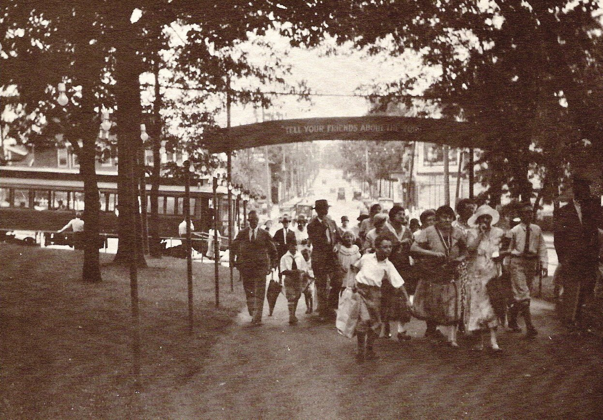
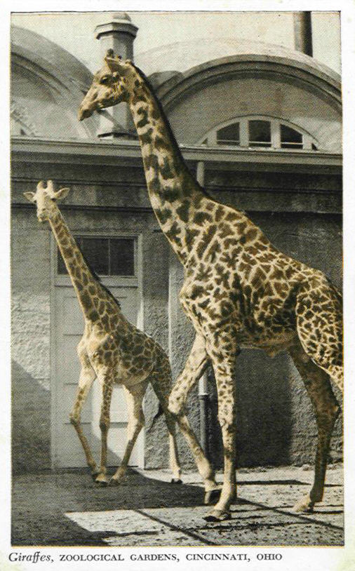

En 1872, Andrew Erkenbrecher creó la "Society for the Acclimatization of Birds" ("Sociedad para la aclimatación de las Aves") en Cincinnati para adquirir aves insectívoras para controlar un brote grave de orugas. Una colección de unas 1000 aves importadas de Europa se encuentra en Burnet Woods, antes de ser puesto en libertad. La "Sociedad de Aclimatación de Cincinnati" se estableció en 1873 como organizaciones similares con un objetivo imperial que también proliferaron en Moscú, Berlín, Londres y Melbourne, durante el siglo XIX.5
La Sociedad Zoológica de Cincinnati estableció un zoológico, que constaba de poco más de sesenta y seis hectáreas de bosque Blakely. El terreno fue comprado por Andrew Erkenbrecher y arrendado a la Sociedad Zoológica durante noventa y nueve años. Este sitio fue adquirido en 1874 y el zoológico abrió oficialmente sus puertas al público el 18 de septiembre de 1875, haciendo del zoológico de Cincinnati y el Jardín Botánico el segundo zoológico más antiguo intencionalmente construido en los Estados Unidos.6 El zoológico abrió al público con 769 animales en exhibición. La entrada era de 25 céntimos para adultos y 15 céntimos para los niños.7
Fundado por Jonathan Schoonover de Cincinnati y diseñado por el arquitecto paisajista Theodor Fundeisen, el zoológico de Cincinnati y el Jardín Botánico fue originalmente llamado el Jardín Zoológico de Cincinnati. El Arquitecto James W. McLaughlin, construyó los primeros edificios del zoológico, siendo la primera muestra zoológica en los Estados Unidos.6
 La colección original de animales del zoológico constaba de ocho monos, dos osos pardos, ciervos de cola blanca, seis mapaches, dos alces, un bisonte americano, una hiena manchada, un cocodrilo americano, un elefante de circo, un tigre y aves en número de más de cuatrocientas, incluido un cuervo. En sus primeros 20 años, el zoológico experimentó muchas dificultades financieras, a pesar de la venta 22 acres (8,9 ha) para pagar la deuda en 1886,7 ya que entró en quiebra en 1898. La "Traction Company Cincinnati" lo compró en 1901 y administró el zoológico durante 16 años. En 1917, la Asociación del Parque Zoológico de Cincinnati, financiada por donaciones de filántropos tales como Mary Emery y Anna Sinton Taft, se hizo cargo de la gestión del parque zoológico. En 1932 la ciudad adquirió el zoológico y en la actualidad se administra a través de la Junta de Comisionados del Parque. En 1987, el zoológico fue designado como "National Historic Landmark" (Monumento Histórico Nacional) por su arquitectura significativa de la que son muestras la Casa del Elefante, la Casa de los Reptiles, y el Memorial de las palomas migratorias. La Casa de los Reptiles del zoológico es el edificio más antiguo de zoo existente en el país, y data de 1875.8
Cinco años, 1.825 días y (casi) 3 millones de minutos. Ese es el tiempo que se ha ido Harambe, el gorila. Fue asesinado en el Zoológico y Jardín Botánico de Cincinnati por un equipo de respuesta de emergencia que protegía a un niño de 3 años que cayó en su exhibición. Su muerte generó controversia y Harambe pronto se convirtió en un ícono de las redes sociales. Y Twitter todavía no se ha olvidado de él. Una mirada retrospectiva: la extraña y sorprendente segunda vida de Harambe Aquí hay un vistazo a lo que le sucedió al gorila hace cinco años: Harambe fue asesinado a tiros en el zoológico de Cincinnati en mayo para proteger a un niño pequeño que había caído en el recinto de los gorilas. ¿Cuándo murió Harambe? Harambe murió el 28 de mayo de 2016. Tenía 17 años y había celebrado su cumpleaños el día anterior. ¿Cómo murió Harambe? El gorila fue asesinado a tiros después de que un niño de 3 años cayera en Gorilla World en el zoológico de Cincinnati. El presidente del zoológico, Thane Maynard, había dicho previamente que el niño se arrastró a través de una barrera y cayó aproximadamente de 10 a 12 pies en el foso que rodea el hábitat. En 2016 se llevó a cabo una vigilia para honrar la memoria del gorila de tierras bajas de 17 años, Harambe. Harambe agarró al niño y lo arrastró. El niño estuvo con el animal durante unos 10 minutos antes de que el Equipo de Respuesta a Animales Peligrosos del zoológico considerara que la situación era "peligrosa para la vida", dijo Maynard. "Se tomó la decisión de sacrificar o disparar a Harambe, así que se fue", dijo Maynard. "Nunca habíamos tenido una situación como esta en el Zoológico de Cincinnati donde un animal peligroso necesitaba ser enviado en una situación de emergencia".
 La misión y visión del Zoológico y Jardín Botánico de Cincinnati está dedicada a crear aventuras, transmitir conocimientos, conservar la naturaleza y servir a la comunidad . Con la adición de nuestro cuarto pilar a nuestra Declaración de misión, Servir a la comunidad, reconocemos la responsabilidad de asociarnos con comunidades diversas y con problemas económicos en nuestro trabajo diario.